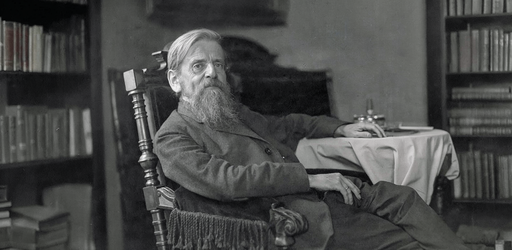
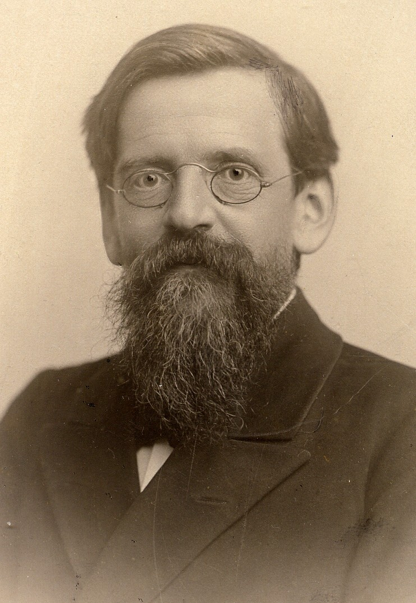

Adolf Schlatter
(1852–1938)
Denker, Lehrer, Glaubenszeuge. Ein Leben für die Bibel und die Wissenschaft.
Wer war Adolf Schlatter?
Adolf Schlatter war einer der einflussreichsten evangelischen Theologen seiner Zeit. Sein Werk verbindet tiefes Bibelverständnis mit wissenschaftlicher Präzision und geistlicher Leidenschaft.
Bis heute inspiriert er Theologie, Kirche und Glaubenspraxis.

Entdecken Sie Adolf Schlatter
Leben, Werk, Wirkung
Erfahren Sie mehr über Schlatter als Denker, Lehrer und Glaubenszeugen.
Mehr erfahren →Werke & Veröffentlichungen
Ein Überblick über Schlatters Schriften und deren Bedeutung.
Publikationen ansehen →Der Adolf Schlatter-Preis
Förderung junger Wissenschaftlerinnen und Wissenschaftler durch den Preis.
Zum Preis →In Memoriam
Die Adolf-Schlatter-Stiftung nimmt Abschied von
Pfarrer Dr. Werner Neuer
6. Mai 1951 — in der Nacht zum 4. Advent 2025
Mit tiefem Dank und großer Anerkennung gedenken wir eines herausragenden Theologen, Lehrers und Forschers, der wie kaum ein anderer das Leben, Werk und die Bedeutung Adolf Schlatters erforscht und vermittelt hat.
Dozent für Systematische Theologie
Theologisches Seminar St. Chrischona
Biograph Adolf Schlatters
Über 200 wissenschaftliche Arbeiten
Als langjähriger Dozent für systematische Theologie am Theologischen Seminar St. Chrischona prägte Werner Neuer Generationen von Studierenden und Kollegen. Sein wissenschaftliches Wirken ist untrennbar verbunden mit der Erforschung eines der bedeutendsten evangelischen Theologen des 20. Jahrhunderts.
Er war der Biograph Adolf Schlatters und gilt als einer der profiliertesten Kenner seines Lebens und Werks. In umfangreichen Studien, Publikationen und insbesondere in seiner großen, international rezipierten Biographie „Adolf Schlatter – Ein Leben für Theologie und Kirche" hat er maßgeblich dazu beigetragen, Schlatters tiefgründige Theologie, sein geistliches Profil und seine bleibende Bedeutung für Kirche wie Wissenschaft herauszuarbeiten und einer breiten Öffentlichkeit zugänglich zu machen.
In etwa einem Viertel seiner über 200 wissenschaftlichen Arbeiten widmete er sich diesem bedeutenden Theologen und setzte damit wertvolle Impulse für die Schlatter-Forschung weit über konfessionelle Grenzen hinweg.
Wir verlieren in Werner Neuer nicht nur einen geschätzten Kollegen und Wegbegleiter, sondern einen profunden und treuen Forscher, dessen Leidenschaft für theologische Wahrheit und kirchliche Tradition generationsübergreifend gewirkt hat.
In stiller Anteilnahme und Dankbarkeit
Adolf-Schlatter-Stiftung